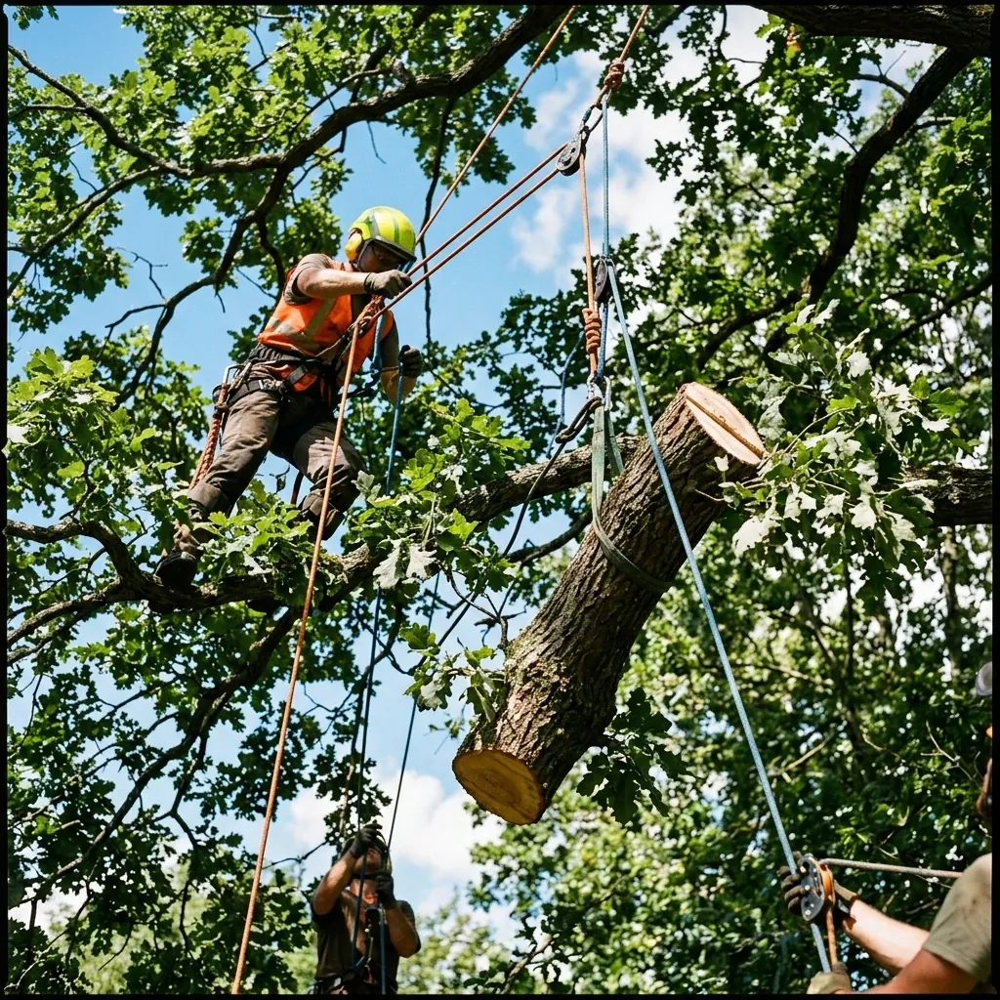
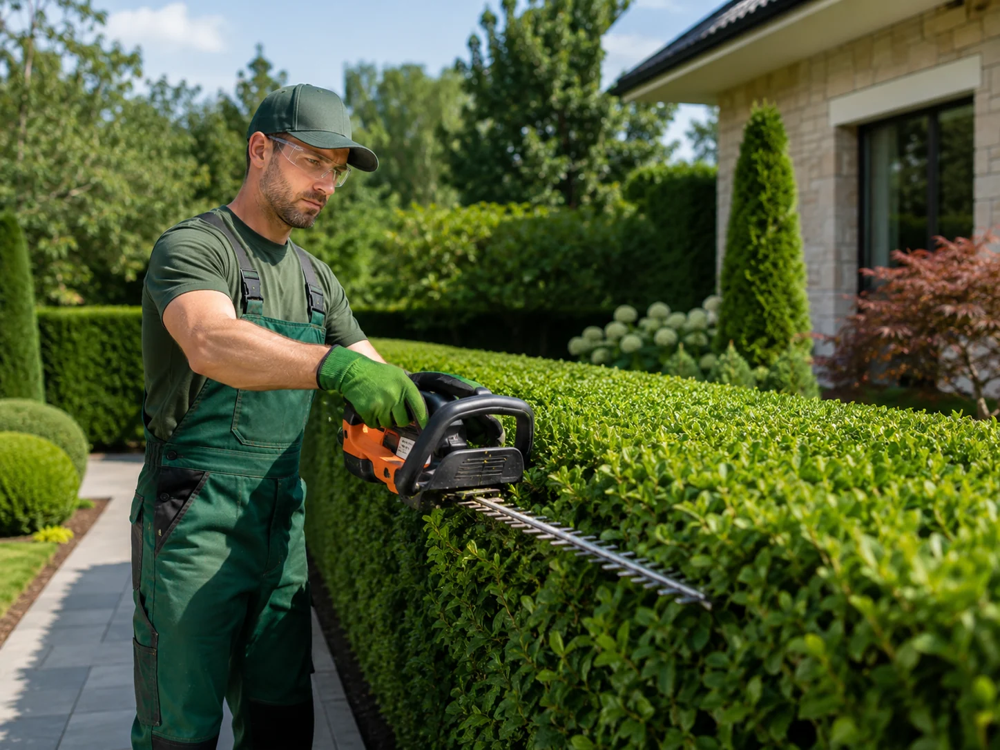
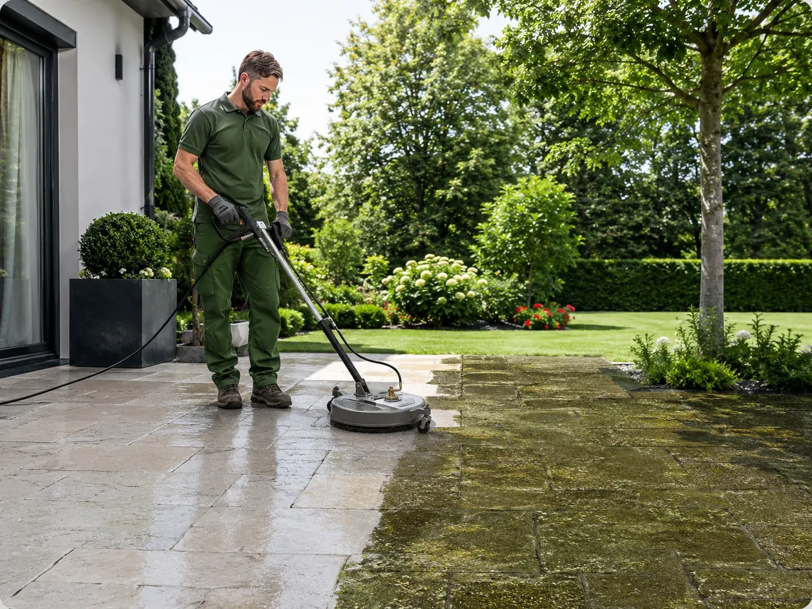

Tonte, débroussaillage, désherbage et soin des massifs — un jardin impeccable toute l'année, sans y penser.
L'entretien est ce qui fait durer un jardin. Maison et Jardin 82 propose des passages réguliers — mensuels, bimensuels ou saisonniers — comme des interventions ponctuelles de remise en état. Tonte, débroussaillage des zones enfrichées, désherbage manuel ou thermique des allées, taille des arbustes, ramassage des feuilles : tout est prévu au contrat, sans supplément surprise.
Nous entretenons des jardins de particuliers comme des espaces verts de copropriétés et d'entreprises à Les Barthes, Castelsarrasin, Moissac, Montauban et alentours. Les déchets verts sont systématiquement évacués et valorisés en fin de passage.
Nous mesurons les surfaces et évaluons la fréquence de passage nécessaire.
Vous choisissez les prestations et le rythme : à l'année ou à la demande.
Nous intervenons aux dates convenues, avec ou sans votre présence.
En fin de saison, nous faisons le point et ajustons le contrat si besoin.
Oui. Nos formules annuelles répartissent les passages sur la saison — plus rapprochés au printemps, plus espacés en été et en hiver — pour un tarif lissé. Vous pouvez aussi nous appeler ponctuellement, sans engagement.
Les petits travaux de jardinage réalisés chez un particulier entrent dans le dispositif des services à la personne, dans la limite du plafond annuel fixé par l'administration. Nous vous indiquons ce qui est éligible sur votre devis et vous remettons l'attestation correspondante.
Nous emportons systématiquement les déchets verts en fin de passage : rien ne reste sur place, sauf si vous souhaitez conserver du broyat pour pailler vos massifs.
Basés à Les Barthes (82100), nous rayonnons sur l'ensemble du Tarn-et-Garonne (82), de Montauban à Valence-d'Agen. Voir toutes nos zones d'intervention →

Élagage et abattage à Les Barthes, Castelsarrasin, Moissac et dans tout le Tarn-et-Garonne.
Découvrir →
Taille de haies à Les Barthes, Castelsarrasin, Moissac et dans tout le Tarn-et-Garonne.
Découvrir →
Nettoyage de terrasses à Les Barthes, Castelsarrasin, Moissac et dans tout le Tarn-et-Garonne.
Découvrir →Devis gratuit et sans engagement sous 24 à 48h, à Les Barthes et dans tout le Tarn-et-Garonne.